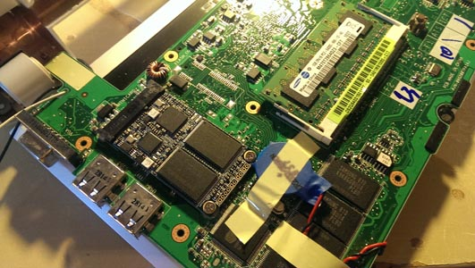
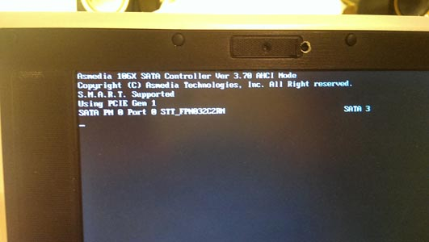

The first time when I opened up my EEE PC 900, I noticed that the Wlan slot and the SSD slot looks exactly the same. Then there came the question, wether we can exchang these two cards. I am sure many people asked the same question as well. Well it turned out that you can't. Because the Wlan card uses the standard minipcie interface while the minissd slot on the ASUS netbook uses a customized interface, but they both uses the same physical minipcie slot.
Then a few years later, netbooks became more and more popular, they developed a new interface called mSATA that again shares the minipcie slot, but are not compatible with the minipcie interface. You can read all bout them on Wiki. Short story is, not all card that looks like a minipcie device will work in a standard minipcie slot.
Until a few days ago I noticed someone actually find a standard minipcie ssd SR16C6MME [LINK Here]. Acording to him, the card will work with standard minipcie interface, which means that it basically works in any Wlan slots. If the BIOS supports boot from PCI, then it is even possible to boot from the card.
This is perfect for my EEE PC 701, since it uses onboard 4G SSD and the default ssd slot is not soldered, therefore I can only extend fast hard drive through the Wlan slot. It will lose the wifi ability, but since it is used as a server, no big deal.
I ordered the lastest model FPN032C2RM, its a 32GB MLC ssd [PDF Here] that has a onboard SATA JMF608 [PDF Here] and a minipcie-to-SATA controller ASM 1061[LINK Here]. I put it in my EEE PC 701 and it worked! I installled Xubuntu on it and it boots off the minipcie ssd.

EPC 701 inside

PCI boot screen
The only small disappointment that I have is that the card is full size minipcie, it does not fit in most of the half sized wlan slots nowadays.